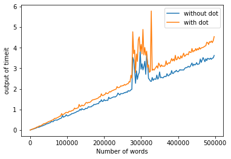

Advices to run computations on big image data.


Most python tutorials explain that if you need to create a list, list comprehensions are faster than for loops.
import timeit
s='''iterations = 100
newlist = []
for i in range(iterations):
newlist.append(i+1)'''
timeit.timeit(s)
8.76447730000001
Compared with
s2='''iterations = 100 newlist = [i+1 for i in range(iterations)]''' timeit.timeit(s2) 4.8245505000000435Now, assume that the objects on the list are all possible combinations of two processes on images (perhaps this is a grid search for optimal parameters). Let's say
def P(X,a):
#X is the image
#a is a parameter to test
def Q(Y,b):
#Y is the output of P(X,a)
#b is a parameter to test
X = some image
values = [Q(P(X,a),b) for a in P_parameters for b in Q_parameters]
Note that you compute 'P(X,a)' several times. You may assume that the speed improvement of the list comprehension is worth repeating a computation, but in the following example, we see that there is not even a speed improvement:
import timeit
s='''
from PIL import Image
img = Image.effect_noise((128,128), 64)
base_img = Image.effect_noise((128,128), 32)
base2_img = Image.effect_noise((128,128), 128)
listimages=[]
for value in range(100):
imgt = Image.blend(img, base_img, value/110)
for value2 in range(100):
endvalue = Image.blend(imgt, base2_img, value2/110)
listimages.append(endvalue)
'''
s2='''
from PIL import Image
img = Image.effect_noise((128,128), 64)
base_img = Image.effect_noise((128,128), 32)
base2_img = Image.effect_noise((128,128), 128)
otherlist = [Image.blend(Image.blend(img, base_img, value/110), base2_img, value2/110) for value in range(100) for value2 in range(100) ]'''
timeit.timeit(stmt=s, number=10)
3.420247700000118
timeit.timeit(stmt=s2, number=10)
5.474881500000038
This is an abstract example, but in Machine Learning/Computer Vision you may have a similar process with other operations such as rotation or resizing.
Here is another example of optimization, this one is from Python Performance tips .
newlist = []
for word in oldlist:
newlist.append(word.upper())
Suppose you can't use map or a list comprehension? You may be stuck with the for loop. The for loop example has another inefficiency. Both newlist.append and word.upper are function references that are reevaluated each time through the loop.
you should write instead:
upper = str.upper
newlist = []
append = newlist.append
for word in oldlist:
append(upper(word))
This was a little bit surprising, and I received some emails questioning the validity of that optimization.
First of all, the author of the Python performance tips suggest that we should always make test with our specific version of Python. I compared the previous two blocks of code in my laptop, by plotting the number of words vs time. Here are my results:

In this case, avoiding dots seems to be a good idea when working with big data, but you should make your own test.
Another piece of advice is to learn about Threads and Multiprocess. Sometimes a simple:
import threading
import concurrent.futures
n=#virtual cpus
with concurrent.futures.ProcessPoolExecutor(max_workers=n) as executor:
executor.map(your_function, some_list_of_inputs)
will suffice.
You can find other advices, such as profiling, in this link of Performance tips .